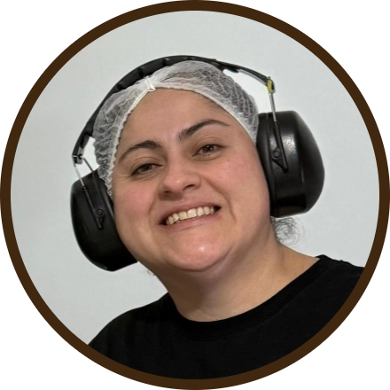
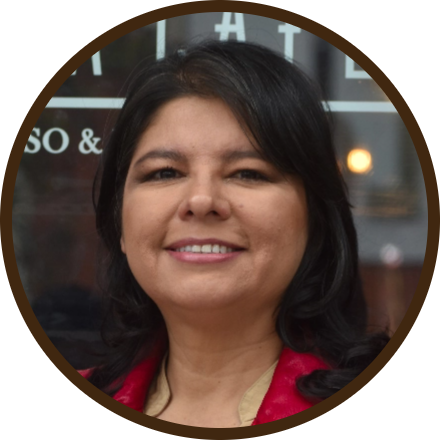

Un viaje sensorial para celebrar a este grano bandera.
elige el café perfecto para iniciar este recorrido
1¿Cuándo prefieres tomar café?
2¿Qué tan fuerte te gusta el café?
3¿Con leche o chocolate?
4¿La cantidad importa?
Ordenar
Estamos preparando tu café...
Un Americano para ti
Servido, disfruta tu café
ERES una persona que disfruta de la simplicidad y la elegancia. Te sugerimos relajarte con una taza de Americano, un café que combina suavidad y plenitud, perfecto para empezar el día o acompañarte durante la mañana.
tipos de grano
El café Americano se destaca cuando se prepara con granos de Chanchamayo, reconocidos por su acidez brillante y su perfil afrutado, que aportan un toque ligero y refrescante a cada sorbo.
cifras
En Perú, se estima que más del 60% de los consumidores prefieren el café filtrado como el Americano para su primera taza del día (Cámara Peruana del Café y Cacao en 2024).
¿No querrás otra taza de café?
Leer más
Cappuccino a la orden
Servido, disfruta tu café
ERES de los que disfrutan del equilibrio y la sofisticación. Te sugerimos saborear un Cappuccino, con su mezcla perfecta de café, leche y espuma, ideal para un descanso a media mañana o como un momento especial.
tipos de grano
Un Café de Cajamarca es perfecto para un Cappuccino, con su cuerpo medio y notas de chocolate y nuez que complementan la cremosidad de la leche y la espuma.
cifras
El consumo de Cappuccino ha crecido un 15% en Perú en los últimos cinco años, especialmente en cafeterías especializadas ( Ministerio de Agricultura y Riego (MINAGRI - 2024).
¿No querrás otra taza de café?
Leer más
Un Doble Mocaccino para ti
Servido, disfruta tu café
ERES de los que ya no existen, de gustos finos y paladar exigente. Te sugerimos deleitarte con un Doble Mocaccino. Disfruta una experiencia dulce y rica en sabores, perfecta para la tarde o como un capricho indulgente.
tipos de grano
El Café de Villa Rica con sus notas de cacao y miel es ideal para un Doble Mocaccino, proporcionando la intensidad y dulzura necesarias para equilibrar el chocolate y la leche.
cifras
En 2024, más de 1.2 millones de peruanos disfrutan regularmente de un Doble Mocaccino en sus visitas a cafeterías (Asociación Peruana de Baristas).
¿No querrás otra taza de café?
Leer más
Un Expreso a la orden
Servido, disfruta tu café
ERES una persona intensa y directa. Te sugerimos recargarte con un Expreso, fuerte y concentrado. Es ideal para quienes buscan una experiencia intensa y una dosis rápida de energía.
tipos de grano
El Café de la Selva Central (Junín) es ideal para un Expreso, con su perfil robusto y sus notas de cacao amargo, proporcionando una bebida rica y profunda que destaca por su intensidad.
cifras
El Expreso es la elección de más del 35% de los consumidores de café en Lima, (Universidad Nacional Agraria La Molina - 2024).
¿No querrás otra taza de café?
Leer más
Tu selección indica que tienes un gusto variado y flexible para el café. Te recomendamos probar diferentes estilos según tu estado de ánimo o el momento del día: un Americano para las mañanas, un Cappuccino a media mañana, un Doble Mocaccino por la tarde, y un Expreso cuando necesites un impulso extra de energía.
¿No querrás otra taza de café?
“Como ocurre con el vino, aprender a degustar café puede ser un viaje sin fin. El café es algo más que una bebida estimulante. Es un mundo de aromas y sabores, un placer gastronómico”
Juan José Bozzo
Director y fundador de la Escuela de Baristas
granos peruanos
Cada último viernes de agosto, el Perú celebra con orgullo el Día del Café Peruano, una fecha que no solo rinde homenaje a una bebida amada, sino también al arduo trabajo de miles de caficultores que, con dedicación, cultivan los granos que ponen al país en el mapa mundial del café de especialidad.
El Arte de Identificar un Buen Grano
El color es clave: un grano de café de calidad debe ser marrón, no oscuro, ya que un grano demasiado oscuro puede resultar en una taza amarga. La trazabilidad también importa: es el “DNI” del café, lo que permite rastrear la cadena productiva desde el campo hasta la taza y permite conectar a los consumidores con los agricultores.
Algunas variedades de café en Perú
Perú es hogar de una diversidad increíble de café, cada una con características únicas que reflejan el lugar donde son cultivadas. Estas son algunas de las variedades:
• Caturra: conocido por su acidez brillante y cuerpo medio.
• Pacamara: con granos grandes y un perfil de sabor complejo.
• Geisha: famoso por sus notas florales y delicadas.
• Bourbon: un grano dulce con notas afrutadas.
• Typica: con un perfil de sabor suave y balanceado.
• Catimor: variedad híbrida del Arábica, desarrollada para ser resistente a enfermedades como la roya del café.
Métodos de Extracción Populares en Perú
Estas variedades se prestan perfectamente a una amplia gama de métodos de extracción, que permiten resaltar las características únicas de cada grano:
• Chemex: utiliza un filtro de papel, ofreciendo una taza limpia y sin sedimentos.
• Sifón Japonés: un método visualmente impresionante que utiliza un filtro de tela.
• V60: utiliza filtro de papel. Tiene forma de cono, como una letra ‘V’ y toma su nombre de ello y su ángulo de 60 grados.
• Prensa Francesa: conocida por su simplicidad, proporciona un café con cuerpo robusto.
• Aeropress: un dispositivo compacto que actúa casi como una jeringa, ideal para preparar café directamente en la taza.
• Moka o Cafetera Italiana: popular en hogares peruanos, produce un café fuerte e intenso.
• Mupeco: Cafetera artesanal creada en 2014 por Rolando Ruiz Loayza durante un viaje a Chanchamayo. Permite disfrutar de un café gota a gota o un americano con un toque peruano.
cifras que enorgullecen
Perú es uno de los principales exportadores de café orgánico, con más de
exportadas en 2023 (MINCETUR). Además, más del 60% de los consumidores locales prefieren un café filtrado, como el Americano, para empezar su día, mientras que el consumo de bebidas como el Cappuccino ha crecido un 15% en los últimos cinco años.
Tradición cafetalera que se extiende por todo el país: desde las altas tierras de Cajamarca hasta las selvas de Villa Rica.
tipos de granos de café producidos en Perú
Contamos con tipos de café con características distintivas debido a las diferentes altitudes, climas y métodos de cultivo en las regiones cafetaleras del país. Algunos de ellos son:
Café Arábica (Coffea arabica)
El más cultivado en Perú con alrededor del 70-80% de la producción nacional. Se cultiva en altitudes elevadas, entre los 1,200 y 2,200 msnm. Conocido por su sabor suave y ácido, de notas florales y frutales. Algunas de sus variedades son: Typica, Bourbon, Caturra, y Catimor.
Café Robusta (Coffea canephora)
Menos común en Perú. Se cultiva en algunas zonas de menor altitud. Es más resistente a las plagas y enfermedades, y tiene un perfil de sabor más fuerte y amargo, con un mayor contenido de cafeína. Se utiliza principalmente en mezclas y en la producción de café instantáneo.
Perú es conocido por producir café de alta calidad, especialmente en regiones como
donde se encuentran las condiciones ideales para el cultivo del café Arábica de especialidad.
consumo promedio
En 2023, el consumo promedio de café en Perú se estimó en
180 tazas
por persona al año.
Un nivel bajo en comparación a países como Brasil (720 tazas al año) y Colombia (370 tazas al año). Además, se estima que en los hogares peruanos, la mayoría del café consumido es en forma soluble, debido a su mayor accesibilidad y menor costo.
Gasto promedio
En 2024, el gasto promedio en café de los hogares peruanos ha mostrado un incremento, especialmente en las zonas urbanas.
Según datos de Kantar y la Cámara Peruana de Café y Cacao,
el ticket promedio de compra de café molido ha aumentado a 6 soles por ocasión
mientras que el gasto en café soluble se mantiene en 2 soles por ocasión.
Esto refleja un mayor interés por parte de los consumidores peruanos en productos de mayor calidad, como el café molido, que ha experimentado un crecimiento en su demanda. En total, el gasto anual en café de los hogares peruanos urbanos se estima en más de 148 millones de soles en 2024.
exportación e importación de café
En 2024, las exportaciones mostraron una recuperación significativa, especialmente en el primer bimestre del año: un valor de 132 millones de dólares, un aumento del 66% respecto al mismo período de 2023. Estados Unidos, Bélgica y Alemania fueron los principales destinos del café peruano, concentrando más del 65% del volumen exportado.
En términos anuales, las exportaciones del 2023 generaron alrededor de $829 millones, aunque representaron una disminución del 15% en volumen y un 32% en valor respecto al año anterior.
En cuanto a la importación, el café soluble sigue siendo el principal producto importado, dado su menor costo y alta demanda en el mercado local.
¿En qué regiones del Perú se consume más café?
Lima es el principal mercado de consumo, pero también se reporta un notable incremento en regiones del interior del país: Piura, Chiclayo, Trujillo, y Chimbote presentan un consumo de café por hogar superior al promedio nacional. En el sur, Cusco también destaca por su alto consumo. Estos patrones de consumo se atribuyen tanto a la creciente disponibilidad de café de calidad en estos mercados como a los cambios en los hábitos de consumo que se han acelerado tras la pandemia.
Así, el café en las regiones urbanas del Perú está en aumento, tanto en volumen como en valor. Hay una creciente disposición de los consumidores a pagar más por café molido, especialmente en estas regiones del norte y sur del país.
Competencias en las que ha participado el café peruano
Taza de Excelencia (Cup of Excellence)
Competencia prestigiosa para cafés especiales. El café peruano ha logrado colocarse en los primeros lugares, lo que ha permitido a los productores recibir precios significativamente altos en subastas internacionales.
Global Specialty Coffee Expo
En este evento organizado por la Specialty Coffee Association (SCA), los cafés peruanos han sido reconocidos por su calidad. Productores y exportadores peruanos han sido galardonados en categorías como "mejor café de origen".
World Barista Championship y World Brewers Cup
Aunque más enfocado en los baristas, los granos de café peruano han sido utilizados por competidores que han alcanzado altas posiciones en estas competencias internacionales, lo que evidencia la calidad del café que se cultiva en Perú.
International Coffee Tasting
El café peruano ha obtenido medallas de oro en esta competencia, que evalúa la calidad sensorial de cafés de todo el mundo.
Principales logros
Premios en Taza de Excelencia
Los lotes de café ganadores han alcanzado precios récord en subastas internacionales (más de $5,000 por quintal).
Reconocimientos en la SCA
Los cafés peruanos han sido destacados en la feria anual de la SCA, consolidando la reputación de Perú como un productor de cafés de alta calidad.
Medallas en International Coffee Tasting
Varios cafés peruanos han recibido medallas de oro y plata en esta competencia, destacando especialmente en categorías como mejor café de origen y mejor café orgánico.
Personajes detrás del café peruano
Detrás de cada taza de café hay mucho más que sabor, aromas y calidez: hay vidas, paisajes y pasiones que merecen ser reconocidas. Aquí algunos de los protagonistas de este camino.
Blanca Flor Quispe
Productora de la Finca San Francisco, Jaén, Cajamarca
En su finca gestionada por mujeres trabaja con su hermana Roxana y su madre Consuelo Rubio, a la cabeza. “Nos impulsa el deseo de ofrecer un café peruano excepcional que refleje la riqueza de nuestra tierra y trabajo desde la cuidadosa selección de variedades hasta la cosecha selectiva, la fermentación controlada, el secado preciso y la cata. Cada detalle es crucial”. Es un desafío que abrazan con pasión y un viaje sensorial conectado con el amor que ponen en cada grano de café.

Enid Esquivel
Tostadora y catadora
El arte de tostar radica en conocer el origen, la variedad, el proceso y el gusto de las personas. “Tostar es mostrar una vitrina de sabores al consumidor que va más allá de una experiencia. Es como como un chef escondido que hace recetas y perfiles que la gente termina degustando en una taza de café”. Para Enid, ser tostadora es una responsabilidad, implica dar a conocer los valores intrínsecos del productor, de dónde viene el producto, cómo se procesa y el respeto total por el cultivo.
Freddy Marín
Barista
Un barista es la persona especializada en preparar y servir café de alta calidad, especialmente bebidas a base de espresso. Implica conocimiento del grano, técnicas de extracción, arte latte y atención al cliente. “Es un artista y técnico del café, un poco químico, un poco de chef, y bastante apasionado”. Transmite el proceso que sigue el café antes de llegar a cada taza.

Patricia Cohaguila
Cafetería de especialidad Pausa Café
Cada cafetería de especialidad tiene su propia personalidad y en ellas se vive el viaje del café. “Te debe dar la experiencia, decirte quién es el productor, qué clase de grano estás tomando, el compromiso que tiene con el agricultor, la trazabilidad y sostenibilidad. Y, por su puesto, debe tener un barista”. En ellas el café se disfruta con todos los sentidos.
la ruta del café: Un viaje del grano a la taza
¿Qué es la ruta del café?
Cada cafetería de especialidad es una historia distinta. A través de ellas se puede conocer el mundo de los caficultores, de las regiones productores de café, a qué alturas se siembra, cómo es la tierra que acoge las semillas. En cada parada serás guiado por los expertos de las cafetería de diversos distritos de Lima y Callao donde tendrás la oportunidad de conocer nuevas propuestas, métodos de filtrado, variedades de café, así como el espíritu y sabor de cada cafetería. ¿Listo para el viaje?
¿Pasaporte? Check!
La iniciativa colectiva del Pasaporte del Café Peruano sigue creciendo al mismo tiempo que el interés de los amantes del café. En esta nueva ruta ofrece visitar 32 cafeterías de 17 distritos de Lima y Callao con el mismo espíritu aventurero y el anhelo por acercar a los clientes al arduo trabajo detrás de una taza de café. Este pequeño cuaderno contiene los detalles de cada cafetería participante, dirección, horarios, página de Instagram y, por supuesto, los descuentos en cada visita. Habrá sorteos mensuales entre los participantes. Este año el costo es de 5 soles. Los pasaportes se podrán sellar virtualmente desde la app Stampita.
beneficios del pasaporte
Permite disfrutar de descuentos y promociones en cada cafetería, sino que también te da la oportunidad de participar en sorteos con premios increíbles. Al completar la ruta y obtener todos los sellos, podrás participar en un sorteo que incluye premios como un viaje a la finca cafetera La Chacra D’dago en Villa Rica, café gratis por seis meses, y cursos especializados en barismo.
¿Cómo obtener el pasaporte?
Obtener tu Pasaporte del Café es muy sencillo. Solo debes acudir a cualquiera de las cafeterías participantes y solicitarlo sin ningún costo. Este pasaporte es personal e intransferible, por lo que es necesario llevarlo contigo en cada visita para que te sellen la página correspondiente.
“La molienda es una de las variables más importantes en la preparación de café. Dependiendo de la molienda, el proceso de extracción será diferente. Lo ideal es tener un molino manual o eléctrico en casa, casi en todas las tiendas por departamento los venden. Si molemos los granos al instante, vamos a tener una mejor experiencia, porque en ese proceso despiertan la fragancia del grano y se da inicio al ritual del café”.
Michael Barriga
Director y fundador de Escuela peruana del café
¿Dónde tomar una buena taza de café?
Lista basada en el Pasaporte del café peruano
Brew Bird Coffee
Chaclacayo
Dirección:
S/N, Esquina, El Sol con, Chaclacayo
Horario de atención:
Lunes a domingo: 8:00 am - 8:00 pm
Café Cultura
Chosica
Dirección:
PS 3 ER A, Av. Lima Sur 752, Lurigancho-Chosica
Horario de atención:
Lunes a sábado: 8:00 am - 10:00 pm
Domingo: 3:00 pm - 8:00 pm
La Micaela
Comas
Dirección:
Av. Micaela Bastidas 908, Comas
Horario de atención:
Lunes a Domingo: 7:30 am - 10:00 pm
La Scie Café
Jesús María
Dirección:
Av. Arnaldo Márquez 1255, Jesús María
Horario de atención:
Lunes a Sábado: 11:00 am - 1:00 pm
Pausa Café
Jesús María
Dirección:
Av Horacio Urteaga 1226 Jesús María
Horario de atención:
Lunes a Domingo: 8:00 am - 9:30 pm
Aroma Café
Lima
Dirección:
Av. Universitaria 1645, Lima
Horario de atención:
Lunes a Sábado: 8:00 am - 11:00 pm
Papu Café
Lince
Dirección:
Av. Paseo de la República 2764, Lince
Horario de atención:
Lunes a viernes: 7:30 am - 8:00 pm
Sábado: 8:00 pm - 1:00 pm
Alquimia Café
Los Olivos
Dirección:
Av Santiago Antúnez de Mayolo 1045, Los Olivos
Horario de atención:
Lunes a domingo: 11:00 am - 9:00 pm
Quiro Café
Magdalena
Dirección:
Jirón Ayacucho 835, Magdalena del Mar
Horario de atención:
Lunes a sábado: 9:00 am - 12:30 pm / 4:00 pm - 9:00 pm
Atipicafé
Miraflores
Dirección:
Av. Paseo de la República 5840, Miraflores
Horario de atención:
Lunes a Jueves: 8:00 am - 8:30 pm
Viernes: 8:00 am - 11:00 pm
Sábado: 8:00 am - 3:00 pm
Cofaine
Miraflores
Dirección:
Av. Ernesto Diez Canseco 154, Miraflores
Horario de atención:
Martes a Domingo: 7:30 am - 9:00 pm
Ilusionista Art
Miraflores
Dirección:
Calle José Gonzales 473, Miraflores
Horario de atención:
Lunes a Sábado: 8:00 am - 9:00 pm
Madre Planta
Miraflores
Dirección:
Av. la Paz 134, Miraflores
Horario de atención:
Lunes a Sábado: 9:00 am - 8:00 pm
Ombú Cafetería
Miraflores
Dirección:
Calle Atahualpa 610, Miraflores
Horario de atención:
Lunes a Viernes: 8:30 am - 8:00 pm
Sábados: 9:00 am - 4:00 pm
Praga Café
Miraflores
Dirección:
Jose Toribio Polo 367, Miraflores
Horario de atención:
Lunes a Sábado: 8:00 am - 8:00 pm
Domingo: 9:00 am - 7:00 pm
Terrúa Café
Miraflores
Dirección:
Pasaje Tello 163 , Miraflores
Horario de atención:
Lunes a Sábado: 8:30 am - 8:00 pm
Domingos: 9:00 am - 7:00 pm
Mamaquilla
Pachacamac
Dirección:
Av. Manuel Valle 1101, Pachacamac
Horario de atención:
Martes a Sábado: 7:30 am - 6:00 pm
Domingo: 9:00 am - 6:30 pm
Aera Café
Pueblo Libre
Dirección:
Barranquilla 341, Pueblo Libre
Horario de atención:
Lunes a Sábado: 9:30 am - 9:00 pm
Barra Cafeteadora
Pueblo Libre
Dirección:
Jirón Juan Antonio Arrieta 127, Pueblo Libre
Horario de atención:
Lunes a Sábado: 9:30 am - 12:30 pm, 5:00 pm - 9:00 pm
Guanacoffee
Pueblo Libre
Dirección:
Santa Isabel 140, Pueblo Libre
Horario de atención:
Lunes a Sábado: 9:00 am - 1:00 pm
Domingo: 4:00 pm - 8:00 pm
Puma Café
Santa Beatriz
Dirección:
Av. Arenales 1199, Santa Beatriz
Horario de atención:
Lunes a Sábado: 8:00 am - 8:30 pm
Space Café
San Isidro
Dirección:
Av. Augusto Pérez Araníbar 1922, San Isidro
Horario de atención:
Lunes a Sábado: 8:30 am - 9:00 pm
Chimoka Café
San Juan de Lurigancho
Dirección:
Jirón Ayar Manco 360, San Juan de Lurigancho
Horario de atención:
Lunes a Domingo: 8:00 am - 10:30 pm
Red Head Coffee Shop
San Juan de Lurigancho
Dirección:
Los Pelitres 1636, San Juan de Lurigancho
Horario de atención:
Lunes a Jueves: 8:00 am - 9:30 pm
Viernes y Sábado: 8:00 am - 10:30 pm
Franqueza Coffee
San Miguel
Dirección:
Boulevard Plaza Mantaro, San Miguel
Horario de atención:
Lunes a Domingo: 8:00 am - 10:00 pm
Café Link
Santiago de Surco
Dirección:
Av. Aviación 4680, Santiago de Surco
Horario de atención:
Lunes a Sábado: 8:30 am - 8:00 pm
Horario de atención:
Martes a Domingo: 8:00 am - 12:00 am
Dime cuánto café tomas y te diré qué tan saludable eres
Desliza para ver la información
1
taza
2
tazas
3-5
tazas
+12
tazas
No tomas mucho café pero si sufres alguna enfermedad cardiovascular recuerda siempre consultar con tu médico antes de tomar café.
Aproximadamente 200 mg al día es una cantidad moderada pero no debes excederte si eres mujer embarazada o lactantes.
Aproximadamente 400 mg de cafeína es considerado seguro para la mayoría de las personas. Este nivel de consumo ha sido asociado con varios beneficios para la salud, incluyendo una posible reducción en el riesgo de ciertas enfermedades, como la diabetes tipo 2 y algunas enfermedades cardiovasculares (OMS)
Más de 1200 mg de cafeína al día podría generar efectos secundarios graves de la cafeína, como latidos cardíacos erráticos, vómitos, convulsiones, diarrea e incluso la muerte (FDA)
*La tolerancia a la cafeína varía entre individuos, ante la duda siempre es recomendable consultar con un especialista.